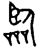

19 臨卦 地澤臨
臨，元亨利貞，至于八月有凶。初九，咸臨，貞吉。九二，咸臨，吉，无不利。六三，甘臨，无攸利，既憂之，无咎。六四，至臨，无咎。六五，知臨，大君之宜，吉。上六，敦臨，吉，无咎。
【卦名】
今本：臨 帛書：林 歸藏：林禍 秦簡：臨 清華簡： 海昏：臨
《說文》：「臨，監臨也。」臨即監察，視察，引申有管理、治理的意思。
金文的臨象一個人從高處往下看眾人，為居高視下、俯視、監視之意。其「臥」字旁象一個人低頭往下看，「品」字《說文》解釋說「眾庶也，從三口」。
帛本卦名作林，學者多以林為臨之假借，因此仍以監臨的臨解釋。
《爾雅》：「林，君也。」這個解釋也引起學者諸多不同的見解，事實上在古經典中很難找到這樣的解釋。少數可見者如《詩經．賓之初筵》「百禮既至，有壬有林」毛傳：「壬大林君也。」然而「有壬有林」的「林」另一較為普遍的解釋為盛大的意思。「林」本義即樹木之叢生，原本就有盛大的意思，這也與《序卦傳》「臨者大也，物大然後可觀」一致。
郭鵬飛〈爾雅釋詁「林烝天帝皇王后辟公侯，君也」探析〉一文對於「林，君也」的各派說法剖析甚詳，該文結論認為「林」是「臨」的假借，取君的動辭義，即「統治」的意思，因此「林，君也」也是監臨之義。
總合各項資料與見解，林與臨兩字可互為假借，有監臨、管理之義外，也有盛大的意思。然而放在《周易》經文脈絡之中，仍以監臨、管理來解釋較為通順。
林禍
《歸藏》卦名作「林禍」，多出的「禍」字也讓學者有很多猜測，有人認為多這一禍字在意指卦辭的「至於八月有凶」。
如聞一多認為，臨卦應作瀶，通霖、淋。「林禍」作「霖禍」、「淋禍」，就是水災的意思，八月秋天大水成災，即「至於八月有凶」。這也是《孟子．離婁下》所說的：「七八月之間雨集，溝澮皆盈。」以及《莊子．秋水》：「秋水時至，百川灌河，涇流之大，兩涘渚崖之間，不辯牛馬。」
依《說文》，霖為雨下超過三日，淋「一曰淋淋，山下水皃」。那麼這與卦象是有些相似的，因地下有澤水，就是地下有大水之象，雨後積水，水災之象。又兌為毀折，積水而毀折就是大水成災。
陳鼓應則認為「禍」是「害」的假借，害又假借為「轄」。林為君，因此「林禍」即「君轄」的意思，此與臨之為治理之義互通。另一解釋為林為君，君為眾，害為夥，「林禍」即「眾夥」。相較之下陳鼓應看法雖然與經義符合，但是解釋上稍嫌迂迴。
清華簡卦名作「」，文獻整理者只說此字有聲符「林」字，因此訓為「臨」。
原簡作，左邊從言，右邊上方從林，下方有點像是「壐」字篆文的簡寫，又有點不像。這個字到底是什麼字，有什麼典故，還有待古文字學者更多的研究。
但初步看來，讓人懷疑，《歸藏》作「林禍」有沒有可能是一個字被拆成了兩個字？這個字是否與有些形近？
【卦義】
監察、監督，管理、治理。
綜觀臨卦卦爻辭，臨解釋作監察，或是雨水，於義皆可通。但以解釋為監察、治理於義理上最佳。
就卦象來說，下兌澤為大水，上坤土掩之，有治水之義。因此「臨」字或許原本就一語雙關，一方面指雨水，一方面也指官員監督治水之事。
臨卦的監察或治理，是親臨式的，就是親臨現場，走進群眾，而不是遠端式的管理。臨與萃兩卦都是由兌和坤所構成，兌為見，坤為眾，因此兩卦都有見眾之義。萃卦地與澤卦氣相交，澤水下潤坤地，因此萃之見眾，有上下一心，凝聚眾志之義。臨之見眾，澤水與坤地卦氣違行而不交，澤水不潤坤地，並有坤土壓澤水之象，因此臨卦之見眾帶有上下對立的治理之義。
監臨的卦義也可從卦氣理論來看，鄭玄：「臨，大也。陽氣自此浸而長大。陽浸長矣，而有四徳，齊功於乾，盛之極也。人之情盛則奢淫，奢淫將亡，故戒以凶也。」孔穎達則認為，消息卦中凡是陽長之卦八月都有凶，不只臨卦，而特別在臨卦講，是因為臨有盛大之義，所以特別以此為戒：「陽長之卦，每卦皆應八月有凶。但此卦名臨，是盛大之義，故於此卦特戒之耳。若以類言之，則陽長之卦，至其終末皆有凶也。」
臨卦為二個陽爻逐漸往上增長，陽氣開始進逼於陰氣並往泰卦發展，至泰卦就是「大來小往」之時。因此臨卦代表的是君子之道在增長，小人之道在消退的時候，也有長官親臨監督的意味。卦氣的消長從十月坤卦之後，為「息卦」（息是生長的意思），也就是陽氣增長陰氣消退的卦。十一月復卦一陽歸來，為一元復始，十二月臨卦，陽氣開始增長，為陽剛用事，臨即陽剛用事之義。到一月泰卦，小往大來，三陽開泰。四月乾卦之後開始為「消卦」（消為消退），也就是陽氣消退陰氣增長，五月姤卦陰氣歸來，女子用事。
《彖》傳說：「臨，剛浸而長，說而順，剛中而應，大亨以正，天之道也。」剛浸而長講的就是陽氣之逐漸生長。剛中而應意指臨卦主爻九二居中而與上五相應。與臨陰陽相反的遯卦彖傳則說「小利貞，浸而長也」，講的是陰氣逐漸增長。
《序卦》：「蠱者事也，有事而後可大，故受之以臨，臨者大也。物大然後可觀，故受之以觀。」卦序上臨卦與觀卦是繼蠱卦之後，相綜的一對對卦。蠱卦為有事而飭，臨卦為親自監督、治理，觀卦則是公布命令，召告天下。
臨卦的凶應雖說是在八月，實則就義理來說，八月象徵的是陽剛之氣消退而陰柔之氣增長。八月有災是在警告，小心陽剛之氣無法持續，所以反應在事情上則是應當注意對事情的熱情只有三分鐘熱度。或者在組織之中，官長對事情的關注，只是短暫性的，而無法持續性或是制度性的維持，如此則不需多久，小人之勢將會反撲。
王弼曰：此剛長之卦也。剛勝則柔危矣，柔有其德，乃得免咎。故此一卦，陰爻雖美，莫過无咎也。
臨，元亨利貞，至于八月有凶。
- 彖曰：臨，剛浸而長，說而順，剛中而應，大亨以正，天之道也；至于八月有凶，消不久也。
- 象曰：澤上有地，臨。君子以教思无窮，容保民无疆。
- 序卦：蠱者事也。有事而後可大，故受之以臨，臨者大也。物大然後可觀，故受之以觀。
- 雜卦：臨觀之義，或與或求。
- 帛書《易之義》：林之卦，自誰不先瞿。
【今解】
大人親臨治理，大亨通，利於貞定。到八月會有凶。
臨卦卦象為陽氣逐漸增長，內悅而外順，九二以剛居中而與六五相應，因此大亨通以貞定。之所以說「八月有凶」，因為八月為陽氣消退之時。此乃告戒之辭。
雖然現在是陽氣增長的時候，但到了八月，陽氣消退，陰氣增長，小人得位，君子失道，為人臣者殺害君王。八月有凶是一種警惕，陽氣沒有一定增長的道理，應未雨綢繆，在承平之世就要有所戒備，才能長治久安。另一種解讀，臨為陽長之卦，八月為陰長陽消，八月有凶比喻人當持續陽氣之增長，若有如八月陽氣不長反退，那麼就有災難。
陸振奇：「日陽象，月陰象。八，少陰之數。七，少陽之數。故言陰來之期曰八月，言陽來之期曰七日。」就消息卦來說，復是陽氣歸來之卦，七為少陽之數，日亦屬陽，因此以七日來復為喻。復之後為臨，臨亦陽長之卦，但以陽退陰長為戒，八為少陰之數，月屬陰，因此說「至於八月有凶」。
【字義】
至於八月有凶：到了八月會有凶險，因為到時候陰陽易位，換成陰氣增長，陽氣消退，有小人逼退君子之義。但對於「八月」有許多種解釋。一、周曆的八月，即遯卦。虞翻說：「與遯旁通，臨消於遯，六月卦也。于周為八月。遯弑君父，故至于八月有凶。」鄭玄說：「臨卦斗建丑而用事，殷之正月也。當文王之時，紂為无道，故于是卦為殷家著興衰之戒，以見周改殷正之數云。臨自周二月用事，訖其七月，至八月而遯卦受之，此終而復始，王命然矣。」依鄭玄的說法，臨卦在殷商時原本為一月，也是一年的開始，文王時因為商紂無道，所以就以該月做為國運興衰時的警戒。到周朝之後改正朔，以臨卦為二月，八月是遯卦。之所以在臨卦時說「至於八月有凶」，也是沿自文王之習，以該月開始自我警惕。二、八月之卦，觀卦。因為觀與臨相綜，卦氣上臨為剛長，而觀卦為剛消。俞琰：「臨十二月之卦，二陽雖長，不足喜也。倒轉為觀，則四陰長於下，二陽消於上，故曰至于八月有凶。觀八月之卦，故言八月。」來知德：「言至建酉，則二陽又在上，陰又逼迫陽矣。至于八月，非臨數，至觀八箇月也。言至建酉之月為觀，見陰之消不久也。」朱熹：「或曰，八月，謂夏正八月，於卦為觀，亦臨之反對也。」三、 八月為否卦。李鼎祚：「臨十二月卦也。自建丑之月，至建申之月，凡閱八月，則成否也。」從臨起算到否卦，總共歷經八個月（臨卦亦算在內）。四、復卦陽始生之後的八個月，也就是遯卦。程頤：「八月謂陽生之八月，陽始生於復，自復至遯，凡八月。」朱熹：「八月，謂自復卦一陽之月，至于遯卦二陰之月，陰長陽遯之時也。」以上說法以第二種最為通俗而易於理解，也就是八月為觀卦。然而第一種說法，以周朝的八月為「遯」卦最為可取。
君子以教思无窮，容保民无疆：君子因此而教導人民思考而沒有窮盡，包容與保護人民而沒有疆界。兌為朋友講習，故曰教思。坤厚載物，德合無疆，故曰容保民無疆。
初九，咸臨，貞吉。
象曰：咸臨貞吉，志行正也。
【今解】
感化式的治理，剛正而且地位正當。貞正則吉。
王弼：「卦唯二陽，遍臨四陰，故二爻皆有咸臨之象。初九剛而得正，故其占為貞吉。」臨卦只有初、二兩個陽爻，兩個陽爻監臨四個陰爻，所以兩陽都為「咸臨」。陽為大，陰為小，初九與九二皆為大，監臨四陰之大人。初九剛正而當位，與四相應，所以貞吉。
【字義】
咸臨：傳統咸有兩種解釋，一是感，二是皆。一，咸為感，感應、感化之義。《易經》中咸卦就是做為「感」來解釋。王弼：「咸，感也。感，應也。」意指初九與六四相感應。虞翻：「咸，感也。得正應四，故貞吉也。」二，咸為皆，如俞琰、來知德作此主張。因為臨卦只有兩個陽爻，為初九與九二，兩爻皆監臨百姓，所以兩爻都說「皆臨」。帛本作「禁林」，但咸卦帛書作「欽」。依帛書，此處之咸與咸卦之感應有所不同。《説文》：「禁，吉凶之忌也。」禁為禁忌的意思，與緘可互通。緘臨，約束之治理方式。
九二，咸臨，吉，无不利。
象曰：咸臨吉无不利，未順命也。
【今解】
嚴格的治理，吉無不利。
九二「咸臨」當作「鹹臨」，鹹為苦的意思，鹹臨即「苦臨」，嚴苛的監臨、治理。九二上為四陰所乘，又是剛長近逼四陰的陽爻（象官長），因此有嚴苛之象。相較於初九的感化管理，六三的輕鬆放任管理，九二最近四陰而能嚴格管理，處中而多譽之位，因此吉無不利。
傳統解釋認為，九二與初九同樣為有感之臨，認為九二是具有中庸之德的一爻，又與六五相應，因此說「吉，無不利」。虞翻：「得中多譽，兼有四陰，體復初，元吉，故无不利。」但《象傳》說：「咸臨吉无不利，未順命也。」語意相當奇怪而不可解，朱熹注解直接說「未詳」。王弼則認為未順命而吉，是因為六五柔弱，九二未能順其命方得為吉：「有應在五，感以臨者也。剛勝則柔危，而五體柔，非能同斯志者也。若順於五，則剛德不長，何由得吉无不利乎？」
【字義】
咸臨：依陳鼓應說法，此咸臨與初九當有別，為嚴格的監臨、管理。「咸臨」假借為「鹹臨」，鹹為苦的意思。高亨以為九二咸臨當作「威臨」：「周易通例，一卦之筮辭，其文有相同者，其旨趣必異。」高亨舉鳴謙、幹父之蠱，以及大過棟撓等爻辭為例指出，臨卦初九、九二皆曰咸臨，吉，因此必定有一爻為譌，進一步引用《象傳》「咸臨吉无不利，未順命也」說：「民未順命，故臨之以威，是古本九二爻辭作威臨也。」陳鼓應贊同高亨「其文有相同者，其旨趣必異」的觀點，但認為「咸臨」為「鹹臨」之義，鹹訓為苦，與六三「甘臨」相對，就如節卦「苦節」與「甘節」相對：「苦謂疾切過分，甘謂鬆緩不及。苦臨，謂嚴苛督治。九二剛爻，但處於柔位，又為四陰所乘；群陰未順於陽，故當嚴律峻法以督治之。〈象傳〉所說『咸臨吉無不利，未順命也』即是此義。」諸說以陳鼓應於易理最為切合。帛本作「禁臨」，可解為「緘臨」，為約束、嚴格之臨。
六三，甘臨，无攸利；既憂之，无咎。
象曰：甘臨，位不當也，既憂之，咎不長也。
【今解】
輕鬆的治理，沒什麼利益。既然知道要憂慮，就能免於罪咎。
六三失位乘陽而無應，處下兌口之位，兌為說為悅，以好話取悅人之象。此為鄉愿式的視察，無監臨之實質功效。兌為無利之象，故曰無攸利。不過若能夠知道憂慮，那麼還可免於罪咎；反之，如果不知憂慮，就有罪咎。六三為多憂之地，所以說「既憂之」。六三爻動全卦成泰，因此憂而動之則無咎。虞翻：「兌為口，坤為土，土爰稼穡作甘。兌口銜坤，故曰甘臨。失位乘陽，故无攸利。言三失位无應，故憂之。動而成泰，故咎不可長也。」
【字義】
甘臨：輕鬆的治理。甘，原指味美，這裡指輕鬆、隨便。甘又可引申做取悅、討好的意思。
无攸利：無所利，無遠利。攸為所，或為遠。無所利，無利益。無遠利，無長遠之利益。
六四，至臨，无咎。
象曰：至臨无咎，位當也。
【今解】
親臨現場的治理，沒有罪咎。
六四當位，與初九相應。
【字義】
至臨：親自到現場的管理。至，解釋為「到」。《說文》：「至，鳥飛从高下至地也。从一，一猶地也，象形。」至為來到地面，六四為坤地之始，至地之象。朱震：「臨道尚近，臨之至也。」意思是六四是最接近群眾者，因坤為地為眾。朱熹：「處得其位，下應初九，相臨之至，宜无咎者也。」「至」還可解釋為「極至」，引申為善。如孔穎達：「履順應陽，不畏剛長，而己應之，履得其位，能盡其至極之善而為臨，故云至臨。」陳鼓應亦採此說。
六五，知臨，大君之宜，吉。
象曰：大君之宜，行中之謂也。
【今解】
睿智的治理，君王德政，吉。此言君王行事合宜而有睿智。
六五為君位，柔順得中，又與九二相應，是能夠接納諫言與容納賢才之君王。《象》曰：「大君之宜，行中之謂也。」因六五居中爻。
王申子：《中庸》曰：「唯天下至聖，為能聰明睿知，足以有臨也。」故知臨為大君之宜。六五以柔中之德，任九二剛中之賢，不自用其知，而兼眾知，為知之大，是宜為君而獲吉也。
胡炳文：臨是以己臨人，五虛中，下應九二，不任己而任人，所以為知，所以為大君之宜。
【字義】
大君：天子。「大君」《周易》中出現三次，師上六「大君有命」、履六三「武人為于大君」，臨六五「大君之宜」。師上六孔穎達：「大君謂天子也，言天子爵命此上六，若其功大，使之開國為諸侯；若其功小，使之承家為卿大夫。」又《左傳》襄公二十一年「大君」杜預注：「大君，謂天王。」孔疏：「進言於王而稱大君，知大君謂天王也。大君，君之大者，故以為天子。《易》云『大君有命』亦謂天子也。」《禮記》「天子」疏：「易孟京說，易有周人五號：帝，天稱，一也；王，美稱，二也；天子，爵號，三也；大君者，興盛行異，四也；大人者，聖人德備，五也。是天子有爵。《古周禮》說天子無爵，同號於天，何爵之有？許慎謹案：《春秋左氏》云施於夷狄稱天子，施於諸夏稱天王，施於京師稱王。」古時稱諸侯國國君夫人為「小君」。
上六，敦臨，吉，无咎。
象曰：敦臨之吉，志在內也。
【今解】
敦厚篤實的治理，吉，沒有罪咎。
上六高而無位（沒有地位），但本性柔順。坤土為敦厚之象，特別是上爻。如復卦六五曰「敦復」，艮卦上爻曰「敦艮」（上九變成坤）。
【字義】
敦臨：敦厚、篤實的治理。敦亦有勉勵之義，《爾雅·釋詁》：「敦，勉也。」敦臨，勉勵之治理。
【彖傳注】
臨，剛浸而長，說而順，剛中而應，大亨以正，天之道也；至于八月有凶，消不久也。
剛浸而長：以消息卦解釋臨卦。臨卦是消息卦而來，復卦剛長而成臨。浸，逐漸。與臨卦陰陽相反的遯卦則是從姤卦陰氣增長，陽氣消退而來，彖傳說：「小利貞，浸而長也。」
說而順：以上下二體卦德解釋臨卦。下兌說而上坤順，說而順之象。
剛中而應：以九二主爻解釋臨卦。臨卦為復卦剛長而來，此剛長之爻即九二。九二剛中而與六五相應，故曰剛中而應。
大亨以正，天之道也：大亨以正解釋元亨利貞。臨卦大亨以正，此乃天道。虞翻曰：「大亨以正，謂三動成乾。天得正為泰，天地交通。故亨以正，天之道也。」
至于八月有凶，消不久也：以陰陽消息解釋經文「至于八月有凶」。陽長陰退為息，陰長陽退為消。消不久，陰長陽退乃不久之事。臨為陽長之卦，若不久而陰長陽退，則是遭凶之時。